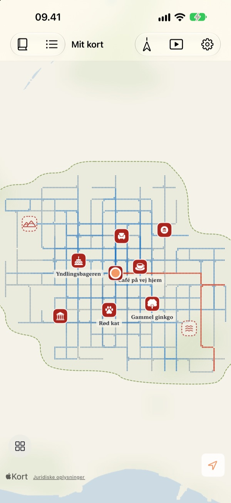
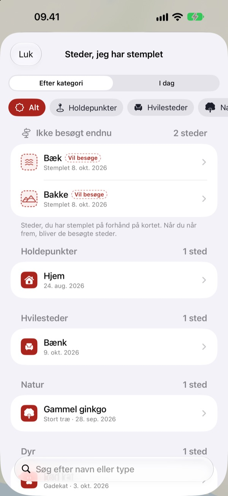
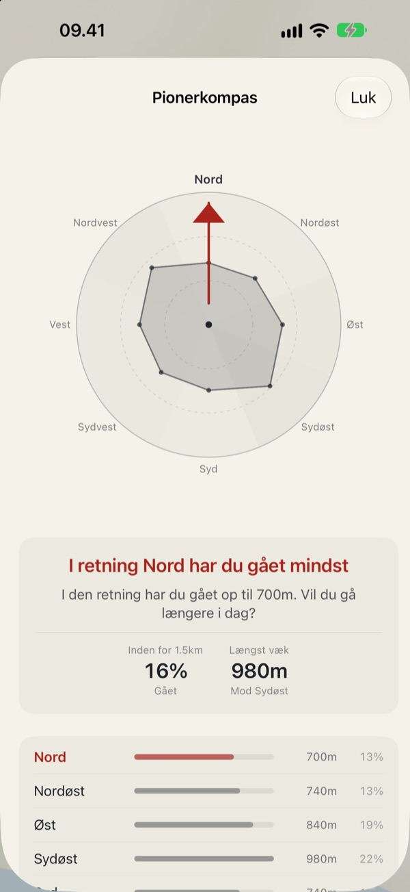
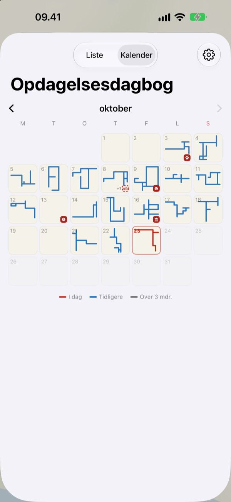

Et kort, der kun
fyldes ud til fods
Det starter som et tomt stykke papir. Kun de steder, du går, fyldes ud, prik for prik, og går du den samme gade hundrede gange, bliver det ikke bredere. Vil du have kortet til at vokse, må du tage en ny vej.
Alle funktioner er gratis og uden reklamer.

Gå en tur
Træk med fingeren eller musen hen over papiret for at gå. De blå prikker er gader, du har gået før. Se, hvordan Dagens vej ændrer sig, når du går i dine gamle spor, og når du går et nyt sted hen.
Går du de samme gader hver dag?
En skridttæller tæller skridt, men spørger aldrig, hvor de førte hen. Hjem til stationen og tilbage fylder fint ringen ud, så sidegaden lige ved siden af forbliver et mysterium i årevis. Buktu Buktu tæller kun de veje, du går for første gang, og det giver dig en grund til at gå en gade længere i dag.
Stempl steder, du har været, og vil hen
Stempl det sted, du står, eller hold fingeren nede hvor som helst på kortet. Der er 212 stempler at vælge imellem, sorteret efter kategori.
Et stempel sat, hvor du aldrig har gået, bliver stående som et sted, du vil besøge, og bliver til et besøgt sted, når du rent faktisk kommer derhen. Tag et billede af et butiksskilt, så klippes baggrunden væk, og skiltet rejser sig som et klistermærke på netop det sted.

Næste tur: den retning, du har gået mindst
Pionerkompas deler området omkring dig i otte retninger og peger på den, du har dækket mindst.
Dagens fodspor viser de steder, du stoppede i dag, i rækkefølge, med hvor langt du gik imellem dem.

Hver dag efterlader en form
Kalenderen tegner formen på hver dags tur i stedet for et tal. Skriv dagbog med tekst og billeder, og se, hvor meget af hver tur der foregik på nye steder.
Vælg en periode, og se dit kort blive tegnet som en video, du kan eksportere.

Tre trin til at komme i gang
- 1
Åbn appen
Et tomt stykke papir folder sig ud.
- 2
Tillad lokalitet
Vælg Altid, og slå Bevægelse og fitness til for at registrere ture uden at åbne appen.
- 3
Gå ud
Jo mindre kendt gaden er, jo mere vokser kortet.
Sådan læser du kortet
- Røde prikker
- hvor du gik i dag
- Indigo prikker
- tidligere skridt, mørkere hvor du oftest kommer forbi
- Grå prikker
- steder, du ikke har været tilbage på i over tre måneder. De falmer, men forsvinder aldrig
- Stiplet stempel
- et sted, du vil besøge. Det bliver besøgt, når du kommer derhen
- Veje, jeg har tegnet
- samlet længde af alle veje, du har gået for første gang
- Dagens vej
- hvor meget af dagens tur der var nyt
- Se alt samlet
- i Indstillinger, åbner Pionerkompas, Dagens fodspor og filmen, hvor kortet tegnes
Vælg mellem tuschkortet og Tegnet kort.
Alle funktioner er gratis
Gratis
- Et kort, der kun fyldes ud, hvor du går, med styr på nye veje
- 212 stempler og klistermærker af butiksskilte
- Pionerkompas og Dagens fodspor
- Kalender og dagbog med tekst og billeder
- Eksportér videoen af dit kort, mens det tegnes
- Widgets til hjemmeskærmen og låseskærmen
- Synkronisering mellem enheder via iCloud
Støt udvikleren
- Giv lidt drikkepenge i Indstillinger, hvis du har lyst
- Drikkepenge låser ikke noget op. Appen er den samme uanset
Ingen reklamer, intet abonnement.
Spørgsmål
Jeg gik en tur, men der kom intet på kortet.
Gå til Indstillinger > Buktu Buktu > Lokalitet, vælg Altid, og slå Bevægelse og fitness til. Så registreres der, selv når appen er lukket. Hvis du har valgt den batterisparende registreringstilstand i appens indstillinger, skal du åbne appen, før du går. Placeringer med lav nøjagtighed gemmes, men tegnes ikke.
Bliver ture i bil eller metro registreret?
Nej. Appen bruger bevægelsesdata og hastighed til kun at tegne gang og løb og udelader strækninger, der ligner kørsel. Den kan en gang imellem tage fejl.
Jeg går den samme rute hver dag, og kortet vokser ikke.
Sådan er reglen. Alt inden for 30 m af, hvor du allerede har gået, tæller som samme vej, så kun veje, du går for første gang, lægges til Veje, jeg har tegnet. Fortovet på den anden side af gaden tæller også som samme vej. Pionerkompas viser, hvor du har gået mindst.
Bliver min placering sendt nogen steder hen?
Ikke til udvikleren. Dine skridt, stempler, dagbog og billeder bliver på enheden og i din egen private iCloud, og udvikleren kan ikke se dem. Anonym brugsstatistik indeholder aldrig koordinater, dagbogstekst, stednavne eller billeder. Apple Kort bruges til at omsætte koordinater til stednavne. Læs mere i privatlivspolitikken nedenfor.
Følger mine registreringer med til en ny enhed?
Ja. Log ind med samme Apple-konto på den nye enhed, og hold iCloud slået til, så følger skridt, stempler, dagbog og billeder med.
Hvordan sletter jeg et stempel eller et billede?
Slet stempler fra listen Steder, jeg har stemplet, og hold fingeren på et billede i dagbogen for at slette det. En måde at slette alle veje og dagbogsnotater på én gang er planlagt.
Hvordan tilføjer jeg widgetten?
Hold fingeren på hjemmeskærmen, tryk på Rediger > Tilføj widget, og vælg Buktu Buktu. På låseskærmen holder du fingeren nede og trykker på Tilpas. Widgetten på hjemmeskærmen viser formen og længden af dagens vej, og låseskærmen viser dagens distance.
Hvad skal jeg bruge?
En iPhone med iOS 17.0 eller nyere.
Hvordan kontakter jeg jer?
Send feedback fra appens indstillinger, eller skriv til os på adressen nedenfor. Vi svarer så hurtigt, vi kan.
Spørgsmål eller feedback? Skriv til leeo@kakao.com.